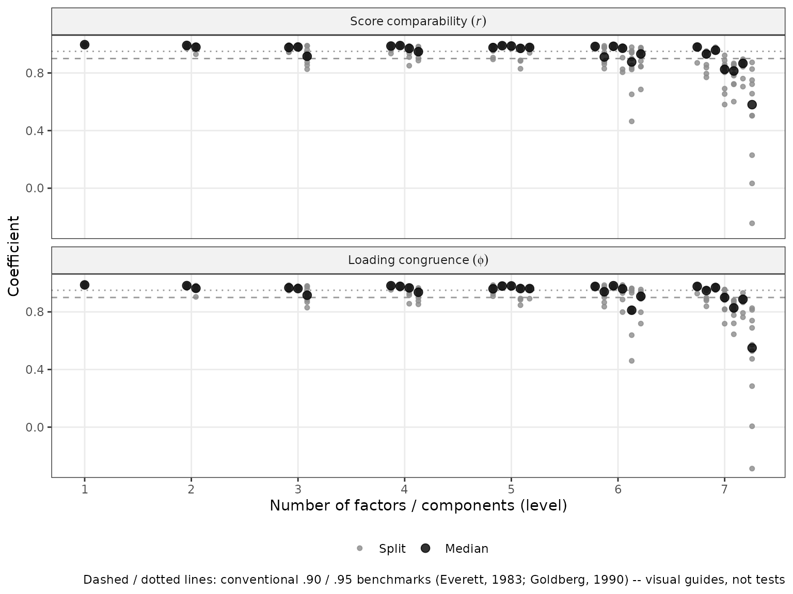
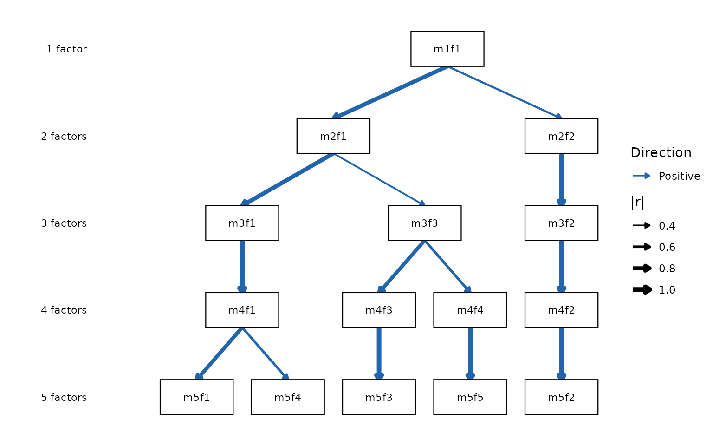

Replicability-Gated Hierarchies: A Recommended Workflow
Source:vignettes/ackwards-girard.Rmd
ackwards-girard.RmdThe other vignettes in this package document its individual verbs. This one takes a position: it lays out the workflow we recommend for answering the questions bass-ackwards analysis exists to answer, and explains why each step is there. We refer to it as the replicability-gated (or Girard) workflow, because its central move is to let replication, not fit, decide how deep the hierarchy you interpret goes.
The problem: depth is where bass-ackwards analyses go wrong
A bass-ackwards analysis asks two questions: how does the structure of this domain organize hierarchically, and how deep is that hierarchy meaningful? The first question is what the method computes. The second is where published applications most often stumble, and the failure mode is consistent: overextraction, followed by substantive interpretation of deep-level factors that would not re-emerge in a new sample. Forbes (2023) documents this directly for the bass-ackwards context — non-replicable structure concentrates in the deeper levels of an overextracted hierarchy.
The standard tooling half-addresses this. Retention criteria like
parallel analysis (suggest_k()) estimate a plausible
range for k from the eigenstructure, and they are the right first
screen. But they do not measure the thing the caution is actually about:
whether the specific factors in your solution would show up
again in another sample from the same population. A level can sit
comfortably inside the plausible range and still contain a factor that
is pure sample idiosyncrasy.
There was, historically, a direct instrument for exactly this. Everett (1983) proposed factor comparability coefficients: split the sample in half, fit the solution in each half independently, apply both halves’ scoring weights to the full sample, and correlate the matched factor scores. A factor that is real re-emerges in both halves and its two score estimates correlate near 1; a factor that is noise does not. Goldberg’s lab used this as a routine gate — Goldberg (1990) retained factor solutions only when they held up across repeated random split-halves — and the practice runs through the research program that produced the bass-ackwards method itself (Goldberg, 2006). The modern bass-ackwards literature largely dropped it.
comparability() restores that gate as a first-class
verb, extended to the bass-ackwards setting: coefficients for every
factor at every level, computed through the same score-correlation
algebra as the hierarchy’s own edges.
Three verbs, three different questions
The workflow below leans on the fact that this package now separates three questions that are easy to conflate:
| Question | Verb | What it measures |
|---|---|---|
| What depth range is plausible? | suggest_k() |
Eigenstructure retention criteria (consensus range) |
| Which factors replicate? | comparability() |
Split-half score comparability per factor per level |
| Which factors differentiate? | prune() |
Forbes (2023) redundancy: factors that persist without adding resolution |
These are genuinely different. A factor can replicate perfectly and still be redundant (the same construct restated at every level); a level can sit inside the plausible range and still fail to replicate. You need all three answers, and no one of them substitutes for another.
Setup
We use the bfi25 Big Five data (25 items, n = 875 after
removing incomplete rows), analyzed with the default PCA engine
throughout.
Step 1: Screen the plausible depth range with
suggest_k()
sk <- suggest_k(bfi, seed = 1)
#> ℹ Running parallel analysis (20 iterations, PC + FA)...
#> ✔ Running parallel analysis (20 iterations, PC + FA)... [302ms]
#>
#> ℹ Running MAP and VSS...
#> ✔ Running MAP and VSS... [176ms]
#>
#> ℹ Running Comparison Data (CD)...
#> ✔ Running Comparison Data (CD)... [10.1s]
#>
print(sk)
#>
#> ── Factor / Component Count Suggestion (ackwards) ──────────────────────────────
#> Variables: 25
#> n: 875
#> Basis: pearson
#> Tested k: 1-8
#>
#> ── Criteria (k = 1-8) ──
#>
#> k = 1: PA-PC ✔ PA-FA ✔ MAP 0.0254 VSS-1 0.5178 VSS-2 0.0000 CD ✔
#> k = 2: PA-PC ✔ PA-FA ✔ MAP 0.0194 VSS-1 0.5839 VSS-2 0.6719 CD ✔
#> k = 3: PA-PC ✔ PA-FA ✔ MAP 0.0175 VSS-1 0.5913 VSS-2 0.7354 CD ✔
#> k = 4: PA-PC ✔ PA-FA ✔ MAP 0.0164 VSS-1 0.6215* VSS-2 0.7837 CD ✔
#> k = 5: PA-PC ✔ PA-FA ✔ MAP 0.0160* VSS-1 0.5738 VSS-2 0.7950* CD ✔
#> k = 6: PA-PC - PA-FA ✔ MAP 0.0172 VSS-1 0.5594 VSS-2 0.7629 CD ✔*
#> k = 7: PA-PC - PA-FA - MAP 0.0205 VSS-1 0.5613 VSS-2 0.7616 CD -
#> k = 8: PA-PC - PA-FA - MAP 0.0236 VSS-1 0.5600 VSS-2 0.7215 CD -
#>
#> ── Recommendations ──
#>
#> • PA-PC: k <= 5
#> • PA-FA: k <= 6
#> • MAP: k = 5
#> • VSS-1: k = 4
#> • VSS-2: k = 5
#> • CD: k = 6
#> Consensus range: k = 4-6
#> ────────────────────────────────────────────────────────────────────────────────
#> Note: k_max in ackwards() is a maximum depth. Setting k_max one or two levels
#> above the consensus to observe factor fragmentation is intentional.
#> Caution: PA-PC tends to overextract; structures may not replicate (Forbes,
#> 2023). PA-FA and CD are more conservative. Use the range.The criteria disagree — they always do — but they bracket a range
(here k = 4–6). Treat the top of that range as a ceiling worth
probing, not a depth worth asserting: parallel
analysis on the PC basis in particular tends to overextract, and
vignette("ackwards-suggest-k") explains each criterion’s
bias direction in detail. Deliberately looking one or two levels past
the consensus is a normal part of the method — the point of the next
step is that you can now do so safely.
Step 2: Gate the depth on replicability with
comparability()
This is the step the workflow is named for. We evaluate every level up to one past the ceiling, across ten random split-halves:
cmp <- comparability(bfi, k_max = sk_hi + 1, n_splits = 10, seed = 2026)
#> Warning: ! 25 columns look like ordinal/Likert items (<= 7 distinct integer values):
#> "A1", "A2", "A3", "A4", "A5", "C1", …, "O4", and "O5".
#> ℹ Results use a "pearson" basis. Consider `cor = "polychoric"` for ordinal
#> data.
#> This warning is displayed once per session.
#> ℹ Fitting 10 split-half replicates (PCA, k = 1-7)...
#> ✔ Fitting 10 split-half replicates (PCA, k = 1-7)... [2.7s]
#>
print(cmp)
#>
#> ── Split-Half Factor Comparability (ackwards) ──────────────────────────────────
#> Engine: PCA
#> Basis: pearson
#> n: 875 (437 per half)
#> Splits: 10
#> Levels: 1-7
#>
#> ── Comparability by level (median across splits) ──
#>
#> k = 1: median r 1.00, min r 1.00 (m1f1)
#> k = 2: median r .99, min r .98 (m2f2)
#> k = 3: median r .98, min r .92 (m3f3)
#> k = 4: median r .98, min r .95 (m4f4)
#> k = 5: median r .98, min r .97 (m5f4)
#> k = 6: median r .95, min r .88 (m6f5)
#> k = 7: median r .87, min r .58 (m7f7)
#> ────────────────────────────────────────────────────────────────────────────────
#> Per-factor detail (incl. Tucker's φ) in `$summary`; per-split values in
#> `$coefficients`.
#> Conventional benchmarks: ≥ .95 comfortable, ≥ .90 floor (Everett, 1983;
#> Goldberg, 1990) -- conventions, not tests. Interpret levels whose factors all
#> replicate.Read the per-level minima, not the medians: a level is only as interpretable as its least replicable factor. Here every factor through k = 5 clears the conventional floor (the weakest median comparability at any of those levels is .92), and the structure degrades past it — at k = 7, m7f7 reaches a median of only .58 and dips to -.24 on its worst split. Those deep factors are not stable dimensions of the data; they are different factors in every half-sample that happen to occupy the same slot.
autoplot(cmp)
Two honesty notes. First, the conventional benchmarks marked on the
plot (.90 and .95, following Everett’s and Goldberg’s practice) are
conventions, not tests — comparability() reports every
coefficient and flags nothing, so borderline cases stay visible and the
judgment stays yours. Second, comparability is internal
replication: it asks whether the structure re-emerges in halves of the
same sample. That is the right gate for “is this factor real
here,” and a necessary condition for — but not a demonstration of —
replication in a new population.
The result is a hierarchy floor: the deepest level at which every factor replicates. For these data that is k = 5 — the Big Five, as it should be.
Step 3: Fit the hierarchy to the gated depth
x <- ackwards(bfi, k_max = 5)
print(x)
#>
#> ── Bass-Ackwards Analysis (ackwards) ───────────────────────────────────────────
#> Engine: pca
#> Rotation: varimax
#> Basis: pearson
#> n: 875
#> k (max): 5
#>
#> ── Levels ──
#>
#> ✔ k = 1: 1 factor, 20.9% variance
#> ✔ k = 2: 2 factors, 32.3% variance
#> ✔ k = 3: 3 factors, 40.7% variance
#> ✔ k = 4: 4 factors, 47.8% variance
#> ✔ k = 5: 5 factors, 53.8% variance
#>
#> ── Edges ──
#>
#> 14 of 40 edges have |r| ≥ 0.3
#> ────────────────────────────────────────────────────────────────────────────────
#> Note: This is a series of linked solutions, not a fitted hierarchical model.
#> Cross-level edges are descriptive score correlations. Per-level fit indices
#> (EFA/ESEM) describe how well a k-factor model fits the items at that level --
#> they do not validate the edges or the hierarchy itself.
autoplot(x)
If you prefer to display the fragmentation beyond the floor (it can be substantively interesting to show a factor dissolving), fit one level deeper and say explicitly in your report which levels passed the replicability gate. What the gate rules out is interpreting the deeper factors as constructs.
Step 4: Find what perpetuates without differentiating —
prune()
Replicability is necessary but not sufficient: a factor can re-emerge
in every half-sample and still add nothing, because it is the same
construct restated level after level. That is Forbes’s (2023) redundancy
question, and it is prune()’s job, not
comparability()’s:
pr <- prune(x, "redundant")
#> ℹ Redundancy pruning (|r| ≥ 0.9) flagged 6 nodes.
#> ℹ Nodes are retained in the object; inspect with `x$prune$nodes` and
#> `x$prune$chains`.
pr$prune$chains
#> chain_id id level r_to_prev phi_to_prev retain endpoint_r
#> 1 1 m2f2 2 NA NA FALSE 0.9648941
#> 2 1 m3f2 3 0.9703055 0.9780829 FALSE 0.9648941
#> 3 1 m4f2 4 0.9853622 0.9916584 FALSE 0.9648941
#> 4 1 m5f2 5 0.9990140 0.9995122 TRUE 0.9648941
#> 5 2 m3f1 3 NA NA TRUE 0.9978857
#> 6 2 m4f1 4 0.9978857 0.9988054 FALSE 0.9978857
#> 7 3 m4f3 4 NA NA FALSE 0.9773027
#> 8 3 m5f3 5 0.9773027 0.9872943 TRUE 0.9773027
#> 9 4 m4f4 4 NA NA FALSE 0.9570776
#> 10 4 m5f5 5 0.9570776 0.9671856 TRUE 0.9570776
#> endpoint_r_agrees
#> 1 TRUE
#> 2 TRUE
#> 3 TRUE
#> 4 TRUE
#> 5 TRUE
#> 6 TRUE
#> 7 TRUE
#> 8 TRUE
#> 9 TRUE
#> 10 TRUEHere the chains tell us that several of the Big Five arrive early and
simply persist — for example one factor emerges at k = 2 and travels
essentially unchanged (r ≥ .97 at every link) down to k = 5. Every node
on that chain replicates beautifully; the chain flags that the
intermediate appearances add no resolution. The two verbs answer
different questions, and reporting both gives the honest picture: which
levels are real, and which levels are new. See
vignette("ackwards-forbes") for chain mechanics,
thresholds, and the retention rule.
Step 5: Interpret with the built-in guardrails
top_items(x, level = 5, cut = 0.5)
#>
#> ── Salient items by factor (ackwards) ──────────────────────────────────────────
#> Engine: pca
#> Cut: |loading| >= 0.5
#> Top-n: all
#>
#> ── Level 5 (5 factors) ──
#>
#> m5f1
#> E2 [-0.720]
#> E4 [0.704]
#> E1 [-0.685]
#> E3 [0.659]
#> E5 [0.584]
#> m5f2
#> N3 [-0.799]
#> N1 [-0.787]
#> N2 [-0.782]
#> N5 [-0.656]
#> N4 [-0.626]
#> m5f3
#> C2 [0.702]
#> C4 [-0.692]
#> C1 [0.671]
#> C3 [0.653]
#> C5 [-0.627]
#> m5f4
#> A3 [0.698]
#> A2 [0.672]
#> A1 [-0.672]
#> A5 [0.569]
#> A4 [0.513]
#> m5f5
#> O5 [-0.676]
#> O3 [0.617]
#> O2 [-0.586]
#> O1 [0.554]
#> ────────────────────────────────────────────────────────────────────────────────
#> Loadings reflect primary-parent sign alignment. Use tidy(x, what = "loadings")
#> for the full matrix.Three interpretation habits keep the analysis honest (all covered in
depth in vignette("ackwards-interpret")):
- Negative loadings do not mean “low” — sign is anchored to the primary parent, and a negative secondary edge is information, not error.
- Name factors within levels, borrowing names down the lineage rather than treating each level as a fresh exploratory result.
- Say what the hierarchy is. A bass-ackwards result is a series of linked solutions whose edges are score correlations — it is descriptive, not a fitted hierarchical model (no Schmid–Leiman, no higher-order SEM), and should be reported as such.
Step 6: Validate downstream, out of sample
The final step closes the loop the same way it opened: with data the model has not seen. Scores for new observations use the fit-time metric, so training and test scores are directly comparable:
train <- bfi[1:600, ]
test <- bfi[601:875, ]
x_train <- ackwards(train, k_max = 5)
test_scores <- predict(x_train, newdata = test)
round(head(test_scores[, grep("^\\.m5", names(test_scores))], 3), 2)
#> .m5f1 .m5f2 .m5f3 .m5f4 .m5f5
#> 1 0.21 -2.77 -1.21 -1.45 -0.27
#> 2 0.19 -1.20 0.28 -1.21 -1.41
#> 3 -0.91 -1.46 1.34 0.06 -0.98If a downstream claim (a correlation with an outcome, a group
difference) holds for training-sample scores but not test-sample scores,
the hierarchy was fine and the claim was overfit — a different failure
than anything in Steps 1–5, and one only held-out data can catch. The
train/test mechanics are covered in
vignette("ackwards-intro").
Common mistakes this workflow prevents
Interpreting non-replicable deep factors. The classic failure. Without a replicability instrument the deep levels are just there, printed with the same authority as the robust ones. Step 2 makes their status measurable and visible.
Trusting a single split. One split-half can flatter
or slander a factor by luck of the draw. comparability()
defaults to ten random splits and reports the spread; the minima across
splits are as informative as the medians.
Cherry-picking the strongest edge. With
pairs = "all", the number of between-level correlations
grows fast, and reporting the most dramatic one capitalizes on chance.
Report full edge tables (or the complete diagram), and treat any
“strongest link” claim as descriptive rather than inferential.
Mistaking persistence for structure. A chain of
near-1.0 correlations down the hierarchy looks impressive but means the
levels are restating one construct. That is a prune()
finding, and it should shorten your reported k range, not lengthen your
list of constructs.
Mistaking replicability for validity. A comparability of .99 means the factor is a stable feature of these items in this population — not that it is a good construct, and not that it generalizes beyond the population sampled. Cross-population replication and external validation remain separate, subsequent steps.
Summary: the workflow in six calls
-
suggest_k(data)— screen the plausible depth range; treat its top as a ceiling to probe. -
comparability(data, k_max = ceiling + 1)— find the hierarchy floor: the deepest level at which every factor replicates across split-halves. -
ackwards(data, k_max = floor)— fit the hierarchy to the gated depth. -
prune(x, "redundant")— identify factors that perpetuate without differentiating; report which levels add resolution. -
top_items(x)+autoplot(x)— interpret with the sign, naming, and descriptive-hierarchy guardrails. -
predict(x_train, newdata = test)— validate downstream claims on held-out data in the fit-time metric.
Steps 1, 3, 4, and 5 are the established method. Step 2 restores the gate the method’s own inventor applied to it, and Step 6 extends the same logic — show me it holds in data you did not fit — to whatever you do with the scores.
References
Everett, J. E. (1983). Factor comparability as a means of determining the number of factors and their rotation. Multivariate Behavioral Research, 18(2), 197–218. https://doi.org/10.1207/s15327906mbr1802_5
Forbes, M. K. (2023). Improving hierarchical models of individual differences: An extension of Goldberg’s bass-ackward method. Psychological Methods. https://doi.org/10.1037/met0000546
Goldberg, L. R. (1990). An alternative “description of personality”: The Big-Five factor structure. Journal of Personality and Social Psychology, 59(6), 1216–1229. https://doi.org/10.1037/0022-3514.59.6.1216
Goldberg, L. R. (2006). Doing it all bass-ackwards: The development of hierarchical factor structures from the top down. Journal of Research in Personality, 40(4), 347–358. https://doi.org/10.1016/j.jrp.2006.01.001
Lorenzo-Seva, U., & ten Berge, J. M. F. (2006). Tucker’s congruence coefficient as a meaningful index of factor similarity. Methodology, 2(2), 57–64. https://doi.org/10.1027/1614-2241.2.2.57